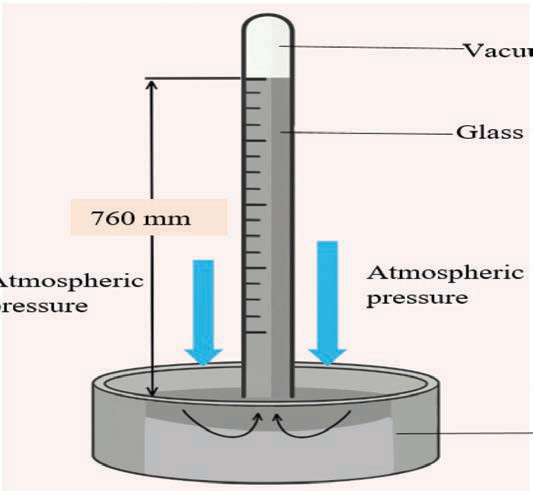

the atmospheric pressure is high. If it’s lower, the atmospheric pressure is low. Many weather stations use mercury barometers because they are bigger and easier to read than aneroid barometers.
A digital barometer has an atomic clock that uses electronic sensors to measure atmospheric pressure. It gives information about atmospheric pressure more accurately and quickly than mercury and aneroid barometers. Figure 6 shows the three types of barometers: a mercury barometer, an aneroid barometer, and a digital barometer.

Vacuum
Glass tube
Atmospheric pressure
Atmospheric pressure
760 mm
Mercury
(a) Mercury barometer

(b) Aneroid barometer

(c) Digital barometer
Figure 6: Types of barometer